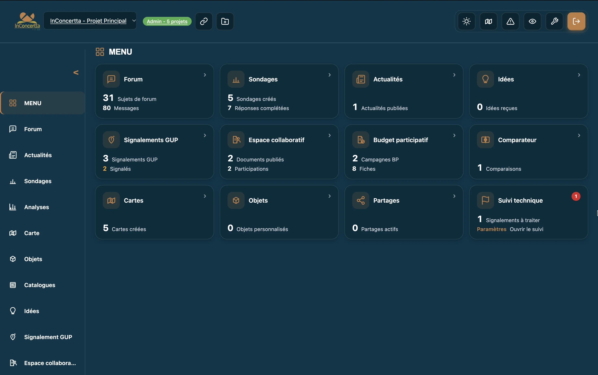
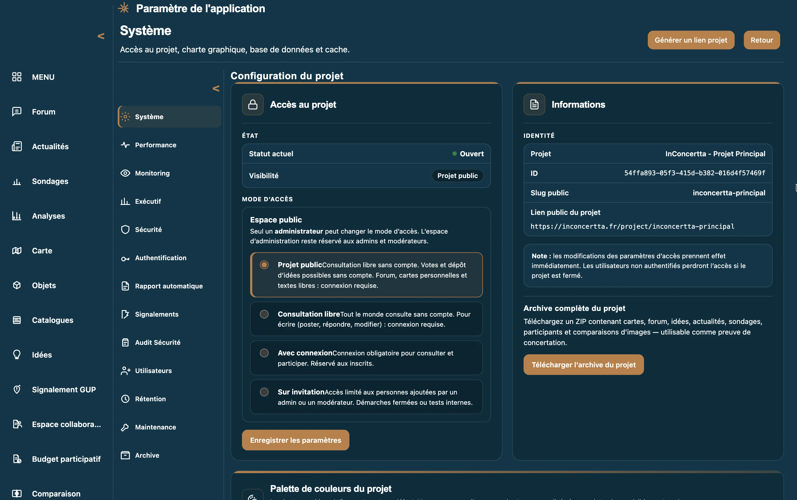
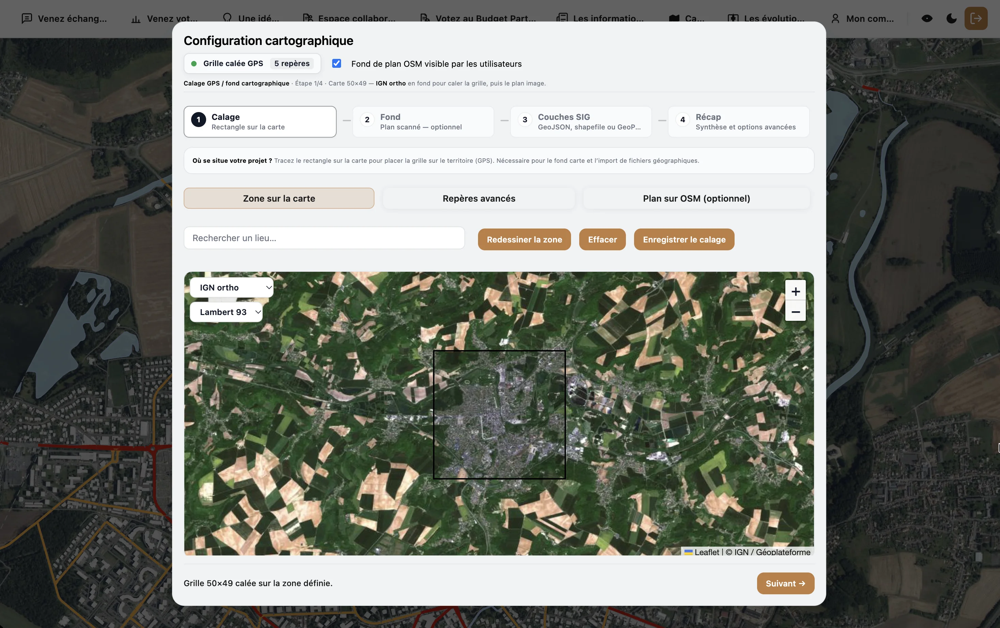
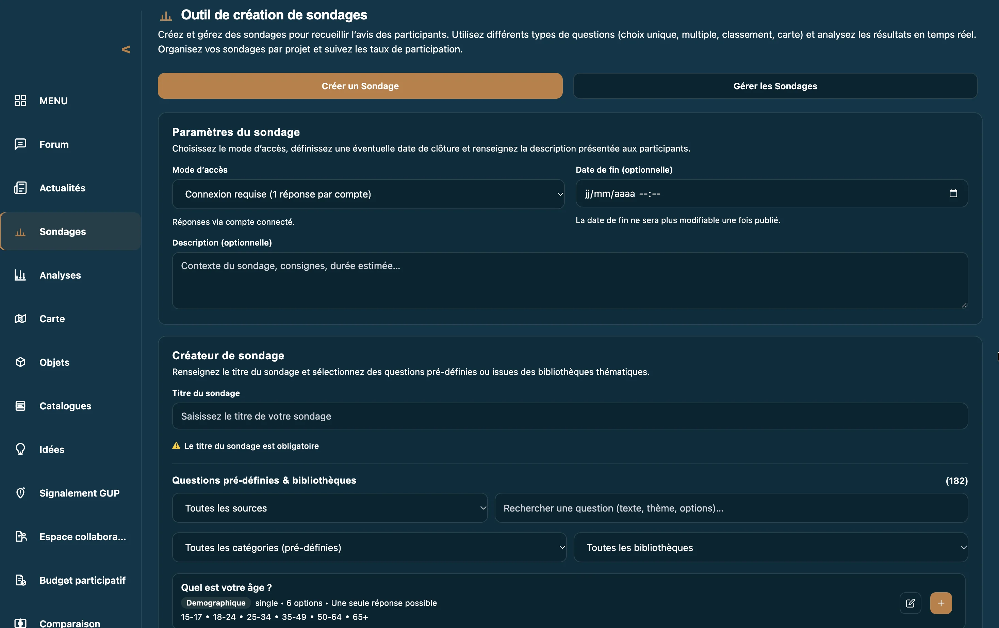
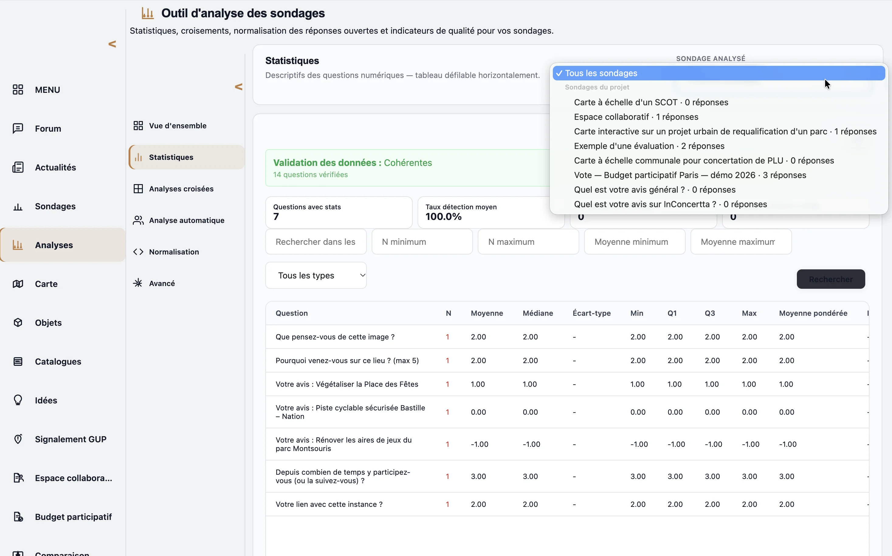
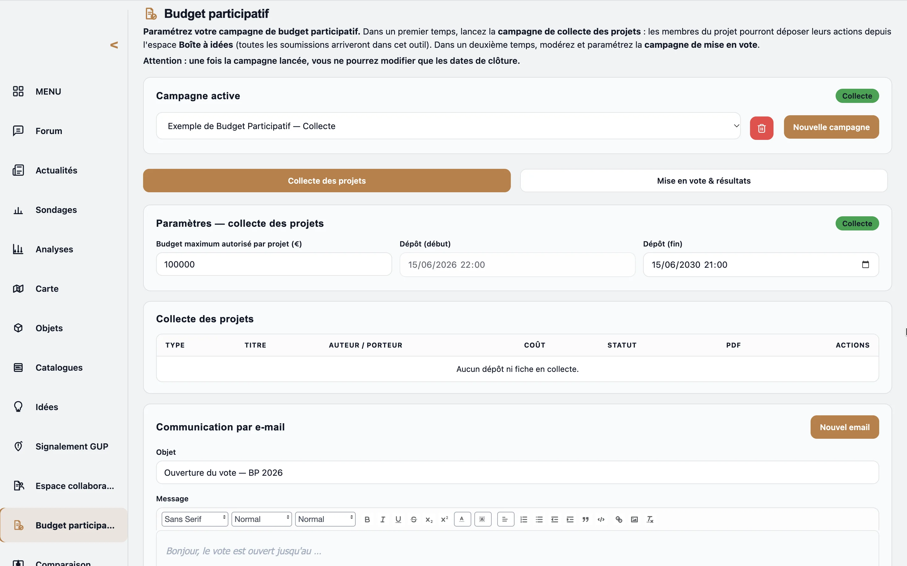

Information & consultation
Expliquez vos projets clairement et sondez les premières attentes pour désamorcer les points de friction avant qu’ils n’émergent.
InConcertta
InConcertta est la plateforme CivicTech qui transforme les avis citoyens en données exploitables : cartographie, enquêtes, budget participatif, espace collaboratif. Fini les avis dispersés entre courriels et comptes-rendus : place à des résultats chiffrés, prêts à être présentés à vos élus et partenaires.
Une application web, accessible sans installation, sur mobile, tablette ou ordinateur. Pour un service clé en main, les accompagnements InCitta viennent compléter l’outil à chaque étape de votre démarche.
Expliquez vos projets clairement et sondez les premières attentes pour désamorcer les points de friction avant qu’ils n’émergent.
Ouvrez un dialogue constructif grâce à des outils interactifs — carte, forums — pour enrichir vos projets de l’expertise d’usage des habitants.
Associez durablement citoyens et partenaires à la construction de solutions partagées, dans un cadre sécurisé.
Un projet = un espace dédié : vous activez uniquement les modules utiles à votre phase — information, dialogue, décision — sans disperser les échanges.
Chaque contribution devient une donnée exploitable, prête à éclairer votre décision.
Accès ouvert à tous, sur invitation ou par liste contrôlée. Outils assemblés selon la phase : informer, consulter, arbitrer.
Le même parcours sur téléphone, tablette ou ordinateur, directement dans le navigateur — aucune installation requise.
Fonds IGN et OpenStreetMap pour situer les échanges et les données sur un repère territorial lisible par tous.
Visualisez l’impact de vos projets sur le terrain, zone par zone, ainsi que l’adhésion ou les réserves des riverains — sans dépouiller des cartons de courriers. Les contributions sont géolocalisées directement depuis le terrain ou la carte, à l’échelle du quartier ou de la rue.
Un module dédié, directement sur la carte, permet aux habitants de signaler un dysfonctionnement et de le localiser précisément. Un appui concret pour la gestion urbaine de proximité : repérer, documenter et suivre les problèmes du quotidien.
Un outil d’aide à la décision pour montrer concrètement l’évolution de vos aménagements et nourrir le débat avec des visuels directement comparables.
Centralisez documents, échanges et avis dans un espace sécurisé partagé avec vos partenaires — préfecture, services de l’État, bailleurs, bureaux d’études. Un seul lieu pour cadrer les allers-retours.
Collectez les projets citoyens, triez-les et retravaillez-les en amont, puis organisez le vote selon votre règlement : plafond budgétaire global, validation classique ou règle mixte.
Questions et sujets de forum ancrés directement sur le plan, pour traiter un îlot, un équipement ou un scénario précis — et éviter les malentendus qui retardent la décision.
Structurez la collecte pour obtenir des résultats quantifiables et des tableaux prêts à l’emploi pour vos rapports d’évaluation. Tris croisés, pondérations, tests statistiques documentés : gagnez du temps sur la restitution chiffrée.
Ajoutez vos propres couches SIG au format GeoJSON pour superposer périmètres, équipements ou scénarios sur la carte, et enrichir l’information disponible autour de chaque projet.
Boîte à idées suivie depuis l’espace gestionnaire, forum modéré, échanges par courriel intégrés au même fil. Exportez images, PDF et données pour consigner les apports et nourrir votre bilan de concertation.
Depuis les paramètres du projet, personnalisez la palette de couleurs pour adapter l’interface à l’identité visuelle de votre collectivité ou de votre démarche.
Un projet de démonstration est prêt : explorez la carte, les sondages et les outils de concertation ci-dessous, sans quitter ce site.
L’espace gestionnaire d’InConcertta est pensé pour les techniciens territoriaux : suivez les contributions en temps réel, modérez les échanges en quelques clics, pilotez cartes, enquêtes, espace collaboratif et budget participatif, puis générez synthèses et exports pour vos dossiers — sans jongler entre tableurs et pièces jointes.
Vos données personnelles sont traitées conformément au règlement européen : base légale identifiée, information des personnes, exercice de leurs droits, sous-traitance encadrée et documentation prête pour vos responsables de traitement.
Données hébergées en Union européenne, sur une infrastructure reconnue (Supabase via AWS : base, authentification, fichiers).
Une architecture pensée pour la confidentialité et l’intégrité des échanges : accès authentifiés et bonnes pratiques de stockage. Le détail opérationnel et juridique est disponible sur demande.






Du passage d’information à la co-construction, la plateforme s’adapte au niveau d’ambition que vous fixez pour associer habitants et usagers à votre projet.
Contrairement aux solutions purement techniques, InConcertta est né de l’ingénierie territoriale — urbanisme, politiques publiques. Une approche qui respecte les cadres d’évaluation des politiques publiques et les dispositifs les plus sensibles : politique de la ville et renouvellement urbain, PVD, concertations encadrées.
Confiance : RGPD et hébergement en Union européenne, pour traiter sereinement les données personnelles et les dossiers sensibles.
L’outil se déploie projet par projet : vous ouvrez un espace dédié, vous le paramétrez et vous y ajoutez vos contenus — sans chantier informatique lourd. Un accompagnement pour un seul dispositif est tout à fait possible ; une fois le cadrage posé, la mise en place peut prendre quelques heures seulement, pour ouvrir la concertation sans attendre.
InConcertta est une solution clé en main : plateforme numérique et expertise en aménagement et participation. Elle aide à structurer et animer la participation, et à éclairer la décision.
Au-delà des fonctionnalités, l’objectif est d’accompagner le projet.
La solution s’adresse notamment à :
Plusieurs modalités commerciales sont possibles :
Chaque formule peut inclure :
InCitta accompagne les territoires sur la programmation, la concertation et la stratégie de projet.
InConcertta en est le prolongement numérique.
L’ensemble forme une approche cohérente combinant outil numérique et expertise terrain.